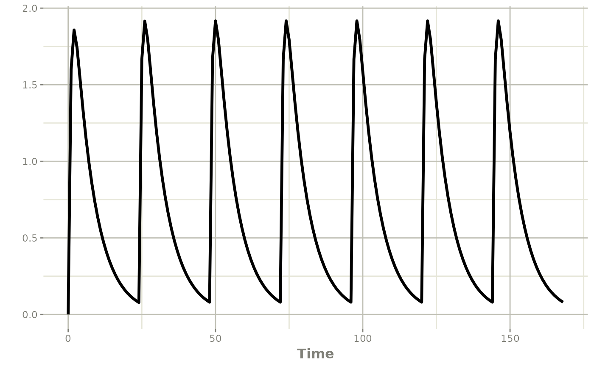
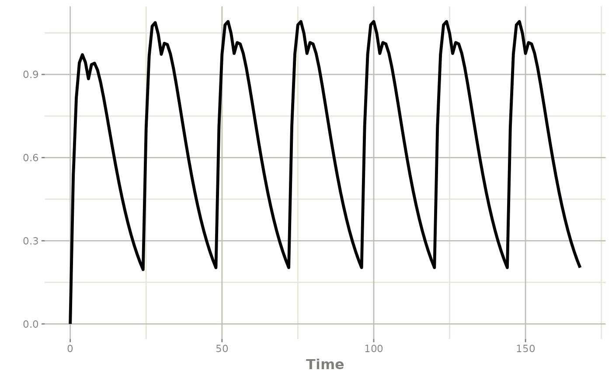
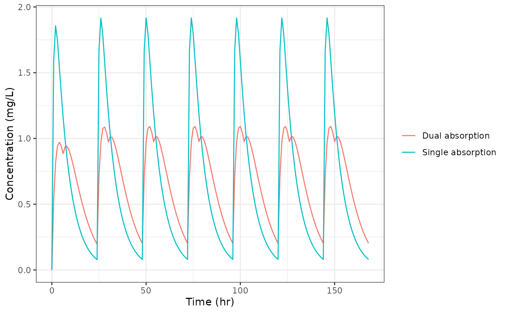

Dual Absorption Models with splitBolus()
2026-06-06
Source:vignettes/articles/rxode2-split-bolus.Rmd
rxode2-split-bolus.RmdBackground
Some drugs exhibit two distinct absorption phases after oral dosing. A classic example is a modified-release tablet where an immediate-release coat dissolves rapidly in the stomach while a matrix core releases drug more slowly in the intestine. Another example is a drug with meaningful gastric absorption in addition to the usual intestinal absorption. Either way, the plasma concentration versus time profile shows a secondary rise or shoulder that a simple first-order depot model cannot capture.
The traditional workaround is to split the dose in the dataset: add a second row with the same dose time but directed at a different compartment, and scale each row’s amount by the fraction going through each pathway. This ties the model structure to the data format and forces dataset edits whenever the model changes.
splitBolus() is a model-only directive in rxode2 that
moves this split into the model block. Bolus doses
arriving at the source compartment are transparently redirected to one
or more target compartments. The dataset never changes.
Setup: a shared oral-dosing event table
library(rxode2)
ev <- et(amt = 100, time = 0, cmt = "depot", ii = 24, addl = 6) |>
et(seq(0, 168, by = 1))This event table represents a week of once-daily 100 mg oral doses
with hourly observations. Both models below will use ev
unchanged.
Single first-order absorption model
First to show we start with a single one-compartment oral absorption model:
modSingle <- function() {
ini({
tka <- log(1.2)
tcl <- log(6)
tv <- log(40)
})
model({
ka <- exp(tka)
cl <- exp(tcl)
v <- exp(tv)
d/dt(depot) <- -ka * depot
d/dt(central) <- ka * depot - cl / v * central
cp <- central / v
})
}
resSingle <- rxSolve(modSingle, ev)
plot(resSingle, cp)
Dual absorption model with splitBolus
To add a second absorption pathway, we change only the
model. The event table ev stays exactly the
same.
splitBolus(depot, depot, depotSlow) tells rxode2 that
any bolus dose directed at depot should instead be applied
to depot and depotSlow. Both target
compartments receive the full original amount, so bioavailability
modifiers f(depot) and f(depotSlow) are used
to partition the dose between the two pathways; The
lag(depotSlow) is to show how much time the second part of
the dose started to release.
modDual <- function() {
ini({
tka1 <- log(0.4)
tka2 <- log(0.2)
fa <- 0.7
tcl <- log(6)
tv <- log(40)
})
model({
ka1 <- exp(tka1)
ka2 <- exp(tka2)
cl <- exp(tcl)
v <- exp(tv)
splitBolus(depot, depot, depotSlow)
f(depot) <- fa
f(depotSlow) <- 1 - fa
lag(depotSlow) <- 6
d/dt(depot) <- -ka1 * depot
d/dt(depotSlow) <- -ka2 * depotSlow
d/dt(central) <- ka1 * depot + ka2 * depotSlow - cl / v * central
cp <- central / v
})
}
resDual <- rxSolve(modDual, ev)
plot(resDual, cp)
The parameters here are:
| Parameter | Meaning |
|---|---|
tka1 |
Log of the fast absorption rate constant (hr⁻¹) |
tka2 |
Log of the slow absorption rate constant (hr⁻¹) |
fa |
Fraction of the dose entering the fast pathway |
tcl |
Log of clearance (L/hr) |
tv |
Log of central volume (L) |
Comparing the two concentration profiles
library(ggplot2)
dfSingle <- as.data.frame(resSingle)[, c("time", "cp")]
dfSingle$model <- "Single absorption"
dfDual <- as.data.frame(resDual)[, c("time", "cp")]
dfDual$model <- "Dual absorption"
dfAll <- rbind(dfSingle, dfDual)
ggplot(dfAll, aes(time, cp, color = model)) +
geom_line() +
labs(x = "Time (hr)", y = "Concentration (mg/L)", color = NULL) +
theme_bw()
The dual absorption profile shows a shoulder on the ascending limb of each dose interval, driven by the slow pathway continuing to deliver drug after the fast pathway has been nearly exhausted.
Key points
The event table
evis identical for both models. No dataset edits are needed to switch from single to dual absorption.splitBolus(depot, depot, depotSlow)intercepts every bolus arriving atdepotand redirects it todepotanddepotSlow. The source compartmentdepotitself never accumulates drug.f(depot) <- faandf(depotSlow) <- 1 - faensure the dose is partitioned so that the total amount absorbed equals the original dose (whenfais between 0 and 1).The same approach scales to population simulations: supply an
iCovoromegamatrix torxSolve()and the dataset requires no changes.More than two pathways are possible-simply list additional target compartments in
splitBolus()and add correspondingf()modifiers.